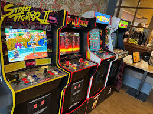
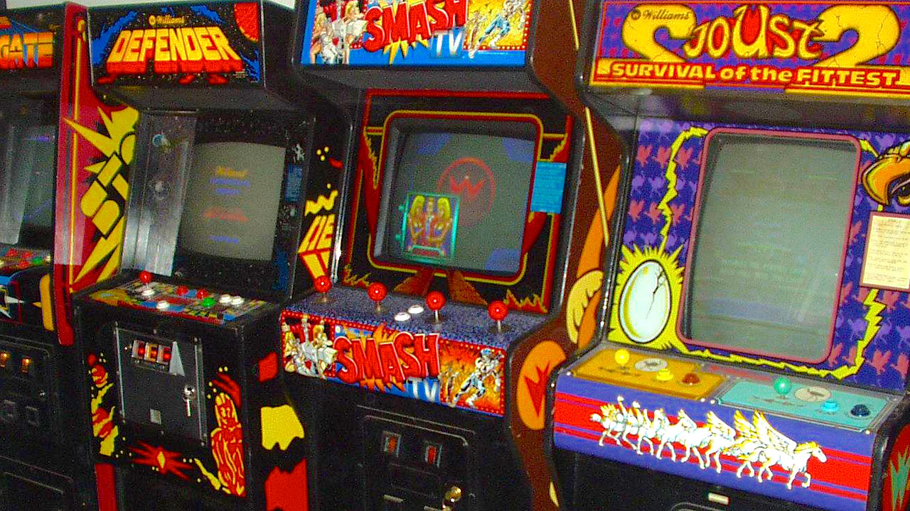
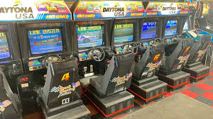
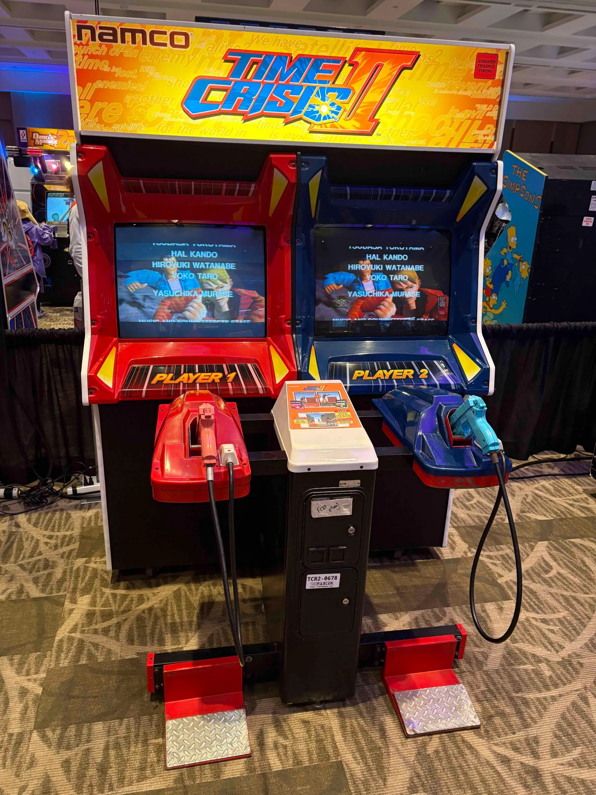
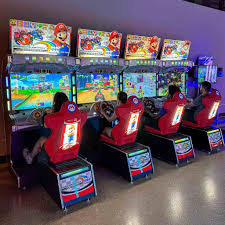
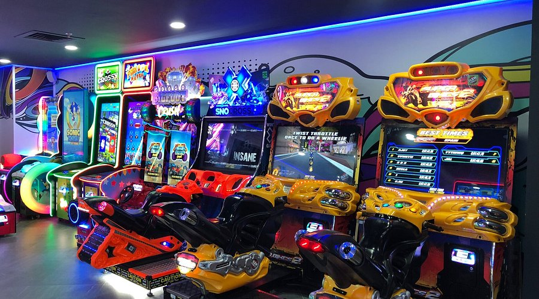

Arcade Gaming Overview
Source: YouTube. (n.d.). Arcade gaming history and evolution. https://www.youtube.com/watch?v=A6c7T49XFlw
Local Multiplayer
Early arcade multiplayer gaming was centered around shared physical machines, where players interacted within the same cabinet. Many arcade games supported two-player modes, either through alternating turns or simultaneous gameplay using multiple control inputs. This design encouraged direct competition and social interaction in a shared public space.
Games such as Street Fighter II and Mortal Kombat helped define competitive multiplayer by allowing two players to battle head-to-head on a single machine. Cooperative multiplayer was also widely popular, with titles like Teenage Mutant Ninja Turtles and The Simpsons Arcade Game supporting multiple players on the same cabinet, often with side-by-side controls.
In addition to single-cabinet play, some arcade systems introduced linked machines, where multiple cabinets were physically connected to enable larger multiplayer experiences. Racing games such as Daytona USA allowed players to compete across several connected cabinets, expanding the scale of local multiplayer while maintaining the shared, in-person experience that defined arcade culture.


Networked Arcades
As networking technology advanced, arcade systems began to incorporate more sophisticated connectivity features. Instead of relying solely on local connections, some arcade machines were linked across larger networks within arcades or even between different locations, allowing for more complex multiplayer experiences.
One notable example is Sega’s ALL.Net system, which connected arcade machines to centralized servers. This enabled features such as online leaderboards, player profiles, downloadable content, and real-time competition across geographically separated arcades. Games could track player rankings and statistics, introducing persistent progression systems similar to those found in online PC and console games.
This transition marked a significant shift in arcade gaming, as it began to adopt elements of online connectivity and data persistence. Although still limited compared to home gaming platforms, networked arcades demonstrated how traditional arcade experiences could evolve alongside modern networking technologies.


Modern Arcade Gaming
Modern arcade gaming has evolved to emphasize immersive, social, and large-scale multiplayer experiences that cannot easily be replicated at home. Many contemporary arcades, such as those found in venues like Dave & Buster’s, focus on unique physical setups including motion-based games, racing simulators, and virtual reality systems.
Popular modern arcade titles such as Time Crisis and advanced racing simulators continue to use linked cabinets, while newer systems incorporate account-based features. Players can often use cards or mobile apps to save progress, track scores, and build persistent profiles across multiple visits.
Today’s arcade systems frequently integrate online connectivity, enabling global leaderboards and competitive ranking systems. Rather than competing directly with home gaming, modern arcades complement it by offering shared physical experiences, social interaction, and specialized hardware that enhances multiplayer engagement.

